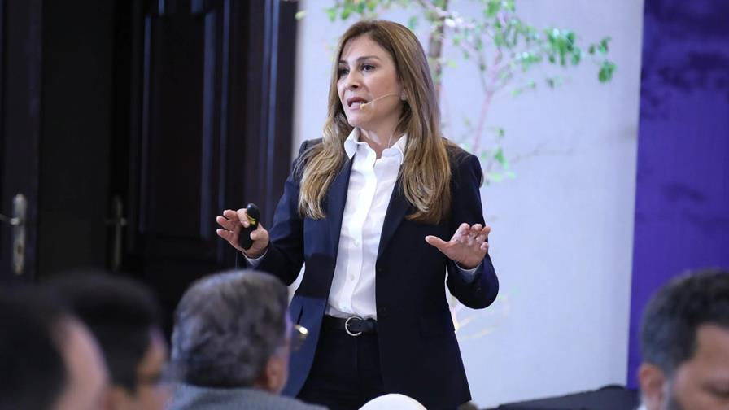

Carolina Mejía saluda la designación de la nueva embajadora de EE. UU. en el país
09 de octubre, 2025
Dijo que el liderazgo de Leah Francis Campos fortalecerá aún más los lazos entre ambas naciones. La alcaldesa del Distrito Nacional, Carolina Mejía, valoró positivamente el nombramiento de Leah Francis Campos como nueva embajadora de los Estados Unidos en la República Dominicana, y calificó su designación como un paso importante para seguir fortaleciendo los vínculos entre ambas naciones.